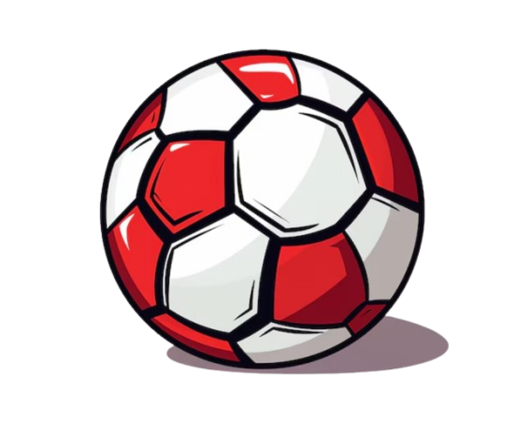

A Copa do Mundo FIFA de 2026 será a primeira edição realizada em três países: Estados Unidos, Canadá e México. Essa será também a maior Copa da história em número de cidades-sede, com partidas distribuídas por diversas regiões da América do Norte, ampliando o alcance global do torneio.

O torneio contará com 48 seleções, em vez das tradicionais 32. As equipes serão divididas em grupos, aumentando o número total de jogos e dando mais oportunidades para países de diferentes continentes participarem. Essa mudança foi promovida pela FIFA para tornar a competição mais inclusiva e competitiva.
A edição de 2026 promete ser uma das mais assistidas da história, com grande impacto econômico e cultural nos países-sede. Além disso, seleções tradicionais e emergentes devem protagonizar jogos de alto nível, aumentando ainda mais o interesse global pelo futebol e fortalecendo o esporte em novas regiões.